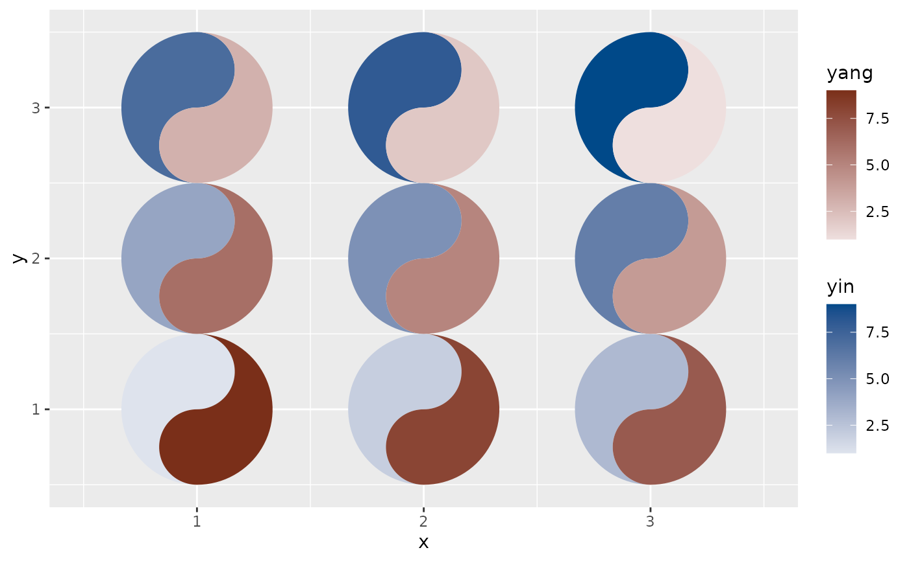

The two fish of a taichi symbol are compared against each other, so the
two fill ramps have to be matched: if one ramp spans a wider luminance
range than the other, equal values do not produce equal visual weight and
one fish systematically appears to dominate. That makes palette pairing a
correctness problem rather than a matter of taste — see
taichi_check_palette() for the measurement and vignette("ggtaichi")
for the discussion.
Arguments
- n
Number of colours per ramp. The default, 5, matches the length of the built-in
yin_colors/yang_colorsvectors.- hues
Two hues in degrees,
c(yin, yang), on the HCL colour wheel (0 red, 120 green, 250 blue). Pick hues far apart; opposite hues (a difference near 180) are the most distinguishable.- luminance
The two ends of the shared luminance trajectory as
c(dark, light), on the CIE L\* scale from 0 (black) to 100 (white). Both ramps run from the light end to the dark end, so the first colour belongs to the lowest value — the same convention asyin_colors/yang_colors.- chroma
Chroma (colourfulness) at the dark end of each ramp. Chroma tapers towards the light end, because a very light colour cannot also be saturated; both ramps taper identically. Values above about 80 will be clipped to the sRGB gamut, and clipping is hue-dependent, which is exactly what breaks the match — keep it moderate and verify with
taichi_check_palette().
Value
A list of two character vectors of hex colours, yin and yang,
each of length n. Pass them straight to geom_taichi() as
yin_colors / yang_colors, or hand the whole list to its palette
argument.
Details
taichi_palette_pair() constructs two sequential ramps in the perceptual
HCL space that differ only in hue: they share one luminance trajectory
and one chroma trajectory, so step i of the yin ramp and step i of the
yang ramp carry the same visual weight.
See also
taichi_check_palette() to measure any pair,
taichi_palette() for the ready-made presets.
Examples
pair <- taichi_palette_pair()
pair
#> $yin
#> [1] "#DEE3ED" "#AEB9D1" "#7D91B6" "#4A6C9D" "#004989"
#>
#> $yang
#> [1] "#EEDFDE" "#D2B1AD" "#B6857E" "#985A4F" "#7A2F19"
#>
# the pair is matched by construction; the package defaults are not
taichi_check_palette(pair$yin, pair$yang)
#> <ggtaichi palette check>
#>
#> step yin L C yang L C dL
#> 1 #DEE3EC 90.1 5.0 #EDDFDE 89.9 5.1 0.2
#> 2 #C5CDDE 82.3 9.4 #E0C7C5 82.2 9.4 0.0
#> 3 #ADB8D1 74.7 13.9 #D2B1AC 74.9 13.1 -0.2
#> 4 #95A4C3 67.2 17.7 #C49A95 67.3 17.2 -0.1
#> 5 #7D91B6 59.9 21.7 #B6857E 60.1 21.0 -0.2
#> 6 #647EA9 52.4 25.9 #A76F66 52.4 25.4 -0.1
#> 7 #4A6C9D 45.1 30.4 #98594E 44.8 30.3 0.3
#> 8 #2F5A93 37.9 36.1 #894433 37.3 36.5 0.6
#> 9 #004888 30.4 41.6 #792E19 29.6 43.2 0.8
#>
#> largest luminance mismatch : 0.8 L* (tolerance 5.0)
#> largest chroma mismatch : 1.5
#> how far apart the ramps stay (median distance, step for step)
#> normal 26.4
#> deutan 27.7
#> protan 22.9
#> tritan 40.3
#>
#> Verdict: PASS
#> the two ramps share a luminance trajectory, so equal values
#> read as equal ink.
library(ggplot2)
d <- data.frame(x = rep(1:3, 3), y = rep(1:3, each = 3),
yin = 1:9, yang = 9:1)
ggplot(d, aes(x, y)) +
geom_taichi(yin = yin, yang = yang, palette = pair, shared_limits = TRUE)
